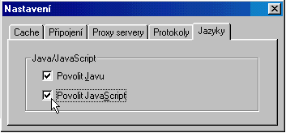

Nevyhodnocují se testy ani cvièení
Všechny testy i cvièení jsou vyhodnocovány pomocí jazyka JavaScript. Proto je nutné, aby prohlížeè tento jazyk podporoval. Závada mùže být v zásadì dvojí :
- Prohlížeè nepodporuje JavaScript
Pokud používáte verzi prohlížeèe nižší než 3.x, je možné, že tento JavaScripty nepodporuje, tedy neumí testy vyhodnotit. Je také možné že jsou JavaScripty pøímo v prohlížeèi zakázány a je tedy tøeba prohlížeè nastavit :

Druhou možností je že používáte nìkterý nestandartní prohlížeè (Arachne apod. ), který rovnìž provádìní JavaScriptù nepodporuje. V obou pøípadech doporuèuji nainstalovat nìkterý novìjší standartní prohlížeè napøíklad MS Internet Explorer, nebo Netscape verze 3.x a vyšší. Tyto podporují spouštìní JavaScriptù implicitnì.
- Nemáte staženy soubory JavaScriptu v adresáøi JS
Pokud si program pouštíte z lokálního disku (ne z Internetu), zkontrolujte, jestli existuje adresáø JS a v nìm soubory s toutéž pøíponou. Pokud ne, je nutné tyto soubory k programu zkopírovat.